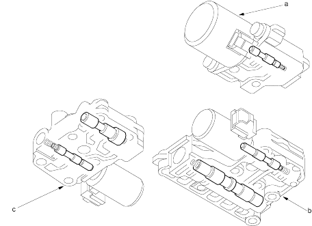

Honda Multi Matic Transmission/CVT
|
14-274 |
Hydraulic Control (cont'd)
CVT Pulley Pressure Control Valve Assembly
The CVT pulley pressure control valve assembly contains the PL regulator valve and the HLC valve which is joined with the linear solenoid. The PL regulator valve supplies low pressure to the pulley to eliminate steel belt slippage. The HLC valve controls the PL regulator valve according to the engine torque. The HLC valve supplies PH-PL control pressure (HLC) to the PH control valve to regulate PH pressure higher than PL pressure. The HLC valve is controlled by the linear solenoid which is controlled by the PCM.
The inhibitor solenoid is bolted on the CVT pulley pressure control valve assembly and supplies the SH-A pressure to the reverse inhibitor valve to control forward range and reverse range.
CVT Start Clutch Pressure Control Valve Assembly
The CVT start clutch pressure control valve assembly contains the start clutch control valve joined with the linear solenoid. The start clutch pressure control valve controls start clutch engagement according to the throttle opening. The start clutch control valve is controlled by the linear solenoid, which is controlled by the PCM.
CVT Speed Change Control Valve Assembly
The CVT speed change control valve assembly contains the pulley control valve and the SHC valve joined with the linear solenoid. The pulley control valve distributes PH pressure and PL pressure to the drive pulley and driven pulley, to shift the transmission. The SHC valve controls the pulley control valve by SHC pressure in accordance with the throttle opening and vehicle speed. The SHC valve is controlled by the linear solenoid, which is controlled by the PCM.
 |
|